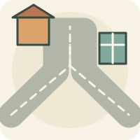

रास्ता और यातायात
Directions & transport · Learn the pattern
Device Hindi voice required; not a native recording.
भाषा समझें
Understand the patternमें indicates location inside, पर at/on, तक as far as. के पास means near; के सामने means opposite/in front of.
उपयोगी वाक्य
Useful phrasesसीधे जाइए।seedhe jaiyeGo straight.
बाएँ मुड़िए।baayen mudiyeTurn left.
स्टेशन कहाँ है?station kahaan haiWhere is the station?
कितनी दूर है?kitnee door haiHow far is it?
Which phrase means: Go straight.
Answer
सीधे जाइए।
Which phrase means: Turn left.
Answer
बाएँ मुड़िए।
लिखें
Copy and read aloudसीधे जाइए।
बाएँ मुड़िए।
Worksheet
Completion is self-marked and stored locally.